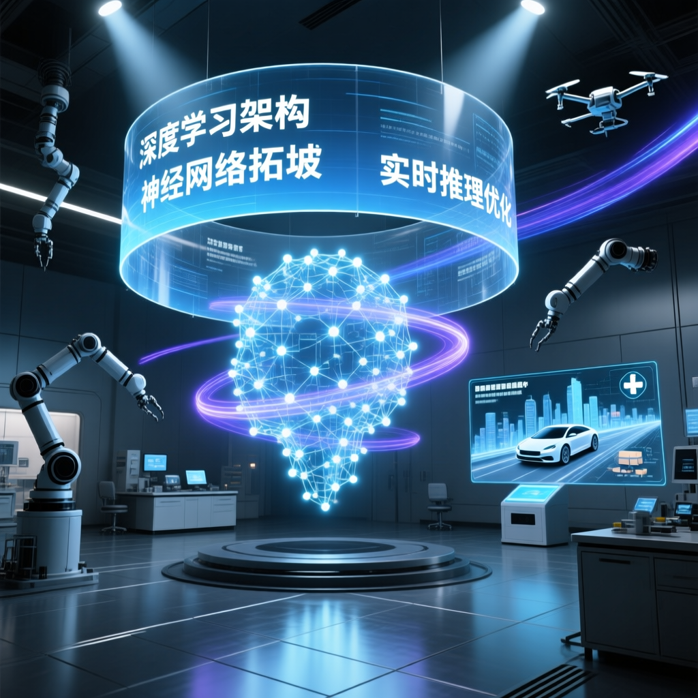

Greg Brockman 首次正面回應：Sora 為何被「冷落」？下一代預訓練模型「Spud」神秘麵紗揭開，AGI 進度條已達 80%！

4月2日，OpenAI 聯合創始人兼總裁 Greg Brockman 在海外播客《Big Technology》中進行了一場信息密度極高的深度對話，首次正面回應 OpenAI 在視頻生成風頭正勁時選擇收縮 Sora 投入的真實意圖。
整個 AI 行業正處於一個關鍵的轉折點——從「驗證技術可行性」的實驗室階段，全面邁向「獲取現實效能深度反饋」的部署階段。
— Greg Brockman，OpenAI 總裁Sora 與 GPT 系列屬於完全不同的技術樹分支，同時追求兩個底層構建方式迥異的分支，對當前資源而言過於沉重。OpenAI 選擇將主要精力絕對對齊到 GPT 系列的開發上。
未來的超級應用將是編程、瀏覽器與對話的完全合體。AI 能夠直接操控網頁並處理複雜的背景信息，人類只需負責監督。
這不僅是一個單一模型，而是凝聚了過去兩年研究成果的全新預訓練基礎。預訓練的提升具有巨大的乘數效應，基礎能力的跨越能顯著降低後續強化學習與推理的成本。
Brockman 明確判斷：AGI 已完成了 70% 到 80%，將在未來幾年內成為現實。標準不是圖靈測試，而是「經濟模式全面轉型的時刻」。
OpenAI 預計在 2026 年秋天推出「自動化研究員」，利用 AI 來反哺 AI 研發，讓 AI 變得更強，能接管研究科學家完整的端到端工作流程。
算力不是「成本中心」，而是像雇佣銷售人員一樣的「收入中心」。只要產品賣得出去，算力的建設規模就直接決定企業收入的邊界。
OpenAI 在 Abilene 的超級計算機耗水量僅相當於一個普通家庭一年的用量，幾乎可以忽略不計。AI 正在真實地拯救生命。
當人類像首席執行官一樣指揮成千上萬個 Agent 艦隊時，必須有一個負責方。如果 Agent 建網站時出了錯，責任不在 Agent，而在作為管理者的人類。
未來 AI 將真正具備電腦操控能力，並配備企業級的審計追蹤和憑證管理後，人類將迎來跨領域的創造力大爆發。
一位用戶通過 AI 研究出了癌症的治療思路，在醫生無能為力的情況下獲得了治療方案。已有用戶利用 AI 研究症狀，成功幫孩子發現腦腫瘤並挽救了生命。
| 維度 | Sora（視頻生成） | GPT（推理模型） |
|---|---|---|
| 底層架構 | 擴散模型分支 | GPT 統一架構 |
| 技術樹 | 獨立分支 | 核心主線 |
| 資源消耗 | 極高（雙線並進負擔過重） | 集中投入 |
| 與 GPT 整合 | 困難（底層不同） | 完美融合 |
| 當前優先級 | 降低（收縮商業化） | 絕對優先 |
| ChatGPT 圖像功能 | 保留（基於 GPT 而非擴散模型，底層技術統一） | |
| 時間 | 能力描述 | 任務時長 | 備註 |
|---|---|---|---|
| 2020 年 | 早期 AI 建站 | 4 小時反覆提示 | 需要大量人工干預 |
| 2022 年 12 月 | 新版 Codex | 一次性高質量完成 | 顯著進步 |
| 新模型發布後 | AI 能處理的任務佔比 | 20% → 80% | 4 倍跳躍 |
| 物理學家案例 | 解決困擾多年的未解難題 | 僅 12 小時 | 科學家感嘆模型在「思考」 |
| 維度 | 傳統觀點 | Brockman 新邏輯 |
|---|---|---|
| 算力定位 | 成本中心 | 收入中心（如雇佣銷售） |
| 基礎模型 | 越大越好 | 在智能與推理成本間找最佳平衡 |
| GPU 投資 | 破產豪賭 | 必勝局（需求永遠趕不上供給） |
| 預訓練算力 | 可能削減 | 只會持續上升 |
| 企業市場 | 觀望態度 | 爆發期：全面採用 AI 進行知識型工作 |
Brockman 明確指出，整個 AI 行業正處於關鍵轉折點——從「驗證技術可行性」的實驗室階段，全面邁向「獲取現實效能深度反饋」的部署階段。
在 Brockman 的構想中，未來的 AI 不應讓人類去適應電腦的操作邏輯，而是由 AI 直接操控網頁並處理複雜的背景信息。這種「順應人類」的計算機將成為人類進入數字世界的專屬門戶。
面對「數學型人才將被 AI 衝擊」的擔憂，Brockman 給出了一種充滿人文關懷的視角：躲在屏幕後敲擊鍵盤並非人類存在的真諦。AI 將釋放出大量的時間，讓人類去增強人際連接，建立更深的情感紐帶。
克服面對空白輸入框的迷茫，去試用這些工具。培養自己的主體性，把自己定位為管理者，去設定方向、委派任務並進行監督。看清自己真正想要什麼，並利用 AI 去實現它——這將是未來時代最重要的生存技能。